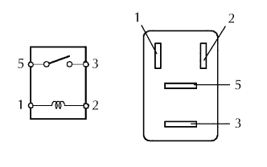

RƠLE MÁY KHỞI ĐỘNG > KIỂM TRA TRÊN XE |
| 1. NGẮT CÁP ÂM RA KHỎI ẮC QUY |
| 2. THÁO RƠLE MÁY KHỞI ĐỘNG (Dấu: ST) |
Tháo nắp hộp rơle khoang động cơ.
Tháo rơle máy đề ra khỏi hộp rơle khoang động cơ.
| 3. KIỂM TRA RƠLE MÁY KHỞI ĐỘNG |
|  |
Đo điện trở của rơle máy khởi động.
| Nối cực | Điều kiện tiêu chuẩn |
| 3 - 5 | 10 kΩ trở lên |
| 3 - 5 | Dưới 1 Ω (khi điện áp ắc quy được cấp đến các cực 1 và 2) |
| 4. LẮP RƠLE MÁY KHỞI ĐỘNG |
| 5. NỐI CÁP VÀO CỰC ÂM ẮC QUY |
| 6. TIẾN HÀNH THIẾT LẬP BAN ĐẦU |
Tiến hành thiết lập ban đầu (Xem trang Kích chuột vào đây).